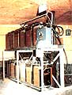
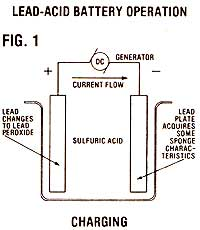
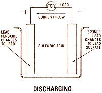
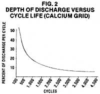
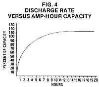
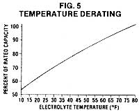
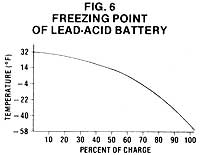
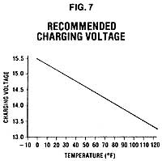
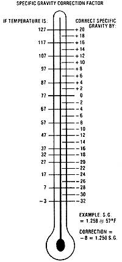
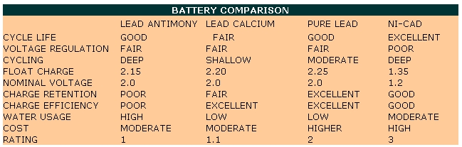

Mother's Guide To Storage Batteries
A good food storage system can be a vital link between you and your alternative energy setup, including construction, lead-acid batter operation diagrams, charts and graphs, checklist.
By TJ Byers
March/April 1982
A good storage system can be a vital link between you and your alternative energy setup.
Making the switch to a renewable source of energy is, undoubtedly, the goal of many MOTHER-readers. However, it's important for anyone who's considering building a home-scale electrical generation system to understand that choosing the power source-whether it be solar, wind, hydro, or whatever-is likely to be only half the job.
Because of the limited (or intermittent) output of most alternative energy systems, some method of storing power is usually required. Most often, storage setups consist of batteries, and their proper selection and sizing can play a decisive role in the success or failure of a renewable energy system.
Now there's a wide variety of batteries available, and they're not all alike. Naturally, some are better suited to certain applications than are others, so let's look into the offerings, and examine the capabilities of the different types.
Broadly speaking, there are two categories of batteries: primary cells and secondary cells (the latter are more properly called storage batteries). The familiar flashlight battery is an example of a primary cell. It's composed of chemicals with different properties, which react and-in the course of doing so-generate electricity. Once the chemicals are exhausted, the cell must be thrown away. (Despite what you may have heard, a primary cell can't be recharged.) Illustration by the Author
A secondary cell, on the other hand, is rechargeable. Like the primary cell, it derives its electricity from a chemical reaction, but the juice taken from the battery may be replaced by charging the cells from an external power source. Obviously, then, an alternative energy system will employ secondary cells.
Of course, even within that narrowed grouping, there's still quite an assortment of offerings. But, despite recent encouraging developments in battery technology, only lead-acid cells can boast proven costeffective performance.
The brainchild of a nineteenth century English chemist named R.L.G. Plante, the lead-acid cell-in its simplest form-consists of two lead plates immersed in a weak sulfuric acid solution (it's called the electrolyte). When voltage is applied across the two plates, a metamorphosis takes place. The plate connected to the positive leg of the voltage source absorbs oxygen from the electrolyte and becomes lead peroxide . . . while the negative plate assumes a spongy appearance, without changing form chemically. (This process is illustrated in Fig. 1.)
When the charging current is removed, a voltage potential of about two volts remains across the plates. This stored electrochemical energy can be tapped as a power source, and-once exhausted-it can be replaced. If no energy losses occurred during the process, this transformation could be repeated indefinitely . . . and all the power that was put into the cell could be drawn back out again. However, as we're about to see, certain physical restraints prevent the cell from working at such efficiency.
CONSTRUCTION
It didn't take Plante's successors long to figure out that the use of smooth lead plates limited the rate at which acid could penetrate and react with the metal. Consequently, plates made of a porous lead paste (designed to be very permeable) were soon developed. They were effective enough to allow the size of the cells to be decreased significantly, without any loss of power storage capability.
The lead paste alone isn't rigid enough to hold the plates together, though, so the material must be supported by a wire mesh (called a grid), which is also made of lead. And even this system presents production problems, since the soft metal is easily deformed during manufacture. Consequently, small amounts of antimony alloy are often added to the lead to make it more rigid.
The density and porosity of the paste used in a battery-along with the physical properties of the grid-determine the capacity and discharge rate of the cells. If a high discharge current is desired (as is the case with a car battery, for example), the plates are often a mere 118" thick and have very porous paste.
Such thin plates, however, can't tolerate many deep discharge cycles. Because the positive plate reacts with the electrolyte, part of the lead paste is shed from the grid every time a cell is discharged. As you can imagine, then, the number of charge/discharge cycles that a battery can stand is determined both by the thickness of its plates and by the depth of each typical discharge ... see Fig. 2 for an analysis of a calcium-grid battery's response to discharge depth. (When a cell finally "dies", it's usually because there's not enough paste left to satisfy the load demand.)
Therefore, in order to build a battery that can withstand many deep discharges, the plates must be made thicker and the paste denser than are those in a rapid-discharge battery. Of course, if an instantaneous high output of energy is required, a number of these deep-cycle units will be needed ... since their limited plate-surface area prevents each one of them from giving up great amounts of power quickly.
BATTERY CHARACTERISTICS
Choosing between discharge rate and life cycle is only one compromise that you'll have to make when selecting a battery. For instance, the antimony alloy that makes plate construction easier presents some problems of its own. As the cell cycles, the antimony will be leached from the positive plate ... which can lead to two problems.
First, the antimony has a nasty habit of crossing to the negative plate and contaminating the surface . . . thereby reducing the capacity of the cell. Furthermore, the roving metal ions also conduct some current from plate to plate. This exchange is entirely independent of any external demand, and it can slowly discharge a battery's cells, even though the unit sits unused. In fact, a substantial portion of a charge can be lost in as short a time as 90 days.
To combat self-discharge problems, scientists at Bell Laboratories developed-in the early 1950's-a new method of hardening lead grids. By adding an alloy with less than 0.1% calcium, they managed to improve plate rigidity without affecting the cell's chemistry. As a result, internal currents were cut by more than ten times!
But, alas, the calcium-reinforced grid demands its own trade-offs. Such batteries can be used only in shallow-discharge situations . . . that is, they should normally be run within the upper 20% of their rated capacity. Furthermore, the stress of deep discharge tends to expand the calcium grid, often causing the paste to lose adhesion.
Despite all the developments in alloy-augmented-grid batteries, however, the basic lead plate that Plante used still offers the longest life and most reliable service. What's more, advances in plate construction (as well as in manufacturing procedures for pure-lead-grid and -paste batteries) have produced units with outstanding performance. Their initial cost, however-which is approximately twice that of the alloyed variety-limits their applications.
WHAT SIZE?
When assembling a battery bank, you'll first need to know the capacity that will be required. This involves determining both your anticipated load and the capabilities of the batteries you intend to use.
Although many people feel more comfortable discussing wattage (and, in fact, many power sources are rated that way), storage batteries are rated in amperehours. (An amp-hour is equal to one amp of current flowing for one hour.) You multiply the current by the elapsed time to arrive at the amp-hour rating. Thus, ten amps flowing for one hour produce the same amp-hour rating as does one amp flowing for ten hours.
To illustrate the method you might use to determine the capacity of a system, let's explore a hypothetical house that's equipped with a small 12-volt windplant. First, let's assume that the residents of the home use about 100 amp-hours a day.
Next, let's say that the turbine gets enough wind to charge the batteries three times per week. Since the recharge interval will be about two and a half days, 250 amphours of storage will be needed to satisfy the home's requirements. But suppose the wind didn't blow for five days? After two and a half days the battery bank would be exhausted. To handle such occasional doldrums, the storage system would need at least 500 amp-hours of capacity. And, as an added benefit, the larger system would allow the batteries to cycle in the upper 50% of their range most of the time . . . thus improving their life expectancy. (Fig. 3 shows a basic method for calculating capacity.)
CHOOSING THE RIGHT BATTERY
Of course, even the larger of the two battery setups in our example would be considered a deep-cycle system. And the choice of battery for a given application is-as we've already hinted-largely determined by the depth of discharge that it will be subjected to. Unfortunately, there isn't always a distinct line between deep and shallow cycling, so we need to examine the operating conditions of each classification carefully.
A shallow-cycle environment is usually specified as one where the batteries are seldom-if ever-drawn down to less than 80% of full charge. Such situations sometimes occur with photovoltaic and hydropower sources. (Batteries are often used with hydroelectric systems to supplement peak demands . . . thus allowing a smaller, less expensive generator to be used.)
Almost any battery will work in a shallow-cycle installation, but some are more cost-effective than others. For example, even though antimony batteries are the least expensive to purchase, they have some serious drawbacks for this sort of application.
First, an antimony cell has a significantly shorter life span than do either its calcium or pure-lead counterparts. What's more, the antimony battery is less efficient . . . as a result of those internal currents we talked about a few paragraphs back. In fact, for every 100 amp-hours taken from an antimony battery, about 125 will have to be replaced. By comparison, a calcium battery can yield 100 amp-hours for an investment of only 110.
In a shallow-cycle system, the heartiness of a pure-lead cell wouldn't be put to full use, and its minor advantage in life span over the competition is clearly outweighed by its much greater cost. Therefore, the calcium-grid type seems to be the logical choice for a shallow-cycle system.
A deep-cycle battery bank, on the other hand, is often discharged to as little as 20% of its total capacity . . . thereby placing a great amount of stress on the cell plates. Of course, the description "deep cycle" is entirely relative . . . that is, with the addition of enough batteries, any deep-cycle setup can be made to function in a shallow-cycle mode.
Because calcium-grid batteries won't hold up in a deep-cycle situation, we'll be looking at only antimony and pure-lead cells for such applications. The particular type-as well as the grid construction and paste density-that'll prove to be most suitable will depend largely on the rate of discharge (or charge) of the batteries.
To give you an idea of how important it is to balance a battery's performance curve to the load, let's look at how manufacturers rate batteries and see what might happen if we violate the cell's use profile. The industry standard for current rating is a measure of the amount that can be removed, by a total discharge, in eight hours.
For example, if a battery is rated at 100 amp-hours, it can give up 12-1/2 amps per hour for eight hours. But suppose we need to extract 20 amps of current per hour from that battery. Under such conditions the battery's rated capacity changes . . . it will be totally discharged in just four hours, and will supply only 80 amp-hours instead of the rated 100. In fact, if we try to remove 45 amps, the battery will be flat in only one hour. (See Fig. 4 for a graph of discharge versus capacity.)
And what happens to the rest of the power in such a situation? Actually, it remains inside the cells. We just can't get at it . . . for the moment. When a battery is forced to discharge more rapidly than it was designed to, the electrolyte becomes stratified-with the weakest portion of the acidic solution lying next to the plates-and the chemical reaction is slowed. If, however, the cells are allowed to rest (which gives the electrolyte a chance to stabilize), the remainder of the charge can be removed.
There's a happy side to the discharge-rate dilemma, though. When a charge is pulled from a battery at a slower rate than the manufacturer specifies, the cells will be able to yield more than the advertised current: A 100-amp-hour battery that's discharged at a rate of five amp-hours, for example, will yield a total of 120 amp-hours over a 24-hour period. Of course, there's still a price to pay . . . to get the extra capacity, at least 120 amp-hours must first have been put in, at a very low charge rate.
Furthermore, the equivalency rule holds true in both charge and discharge modes. Just as is the case with a too rapidly dis charged battery, one that's charged too quickly won't reach its full capacity ... even though the cells appear to be full. If the "abused" battery is allowed to sit for a few hours, the charged voltage will gradually drop. Eventually, the electrolyte will stabilize and the cell can be brought up to (and beyond) its rated capacity with a gradual "trickle charge".
THE GRAY AREA
Between the two extremes of shallow and deep cycling lies a great middle ground where it's often difficult to make decisions about which type of battery would be best. What happens, for example, when the discharge varies between 30% and 40%?
Of course, calcium-grid batteries are, again, eliminated right off the bat ... since they won't last long when drawn down more than 20%. But to choose between antimony and pure-lead types, we need to know a few more things about the energy system in question. For one thing, we'll have to determine the rate at which the batteries will be charged. Wind generators, for example, often apply heavy charge rates to batteries, even though the discharge rate is generally gradual.
In such a situation, either antimony or pure-lead batteries with fairly porous plates (which allow high charge or discharge, remember?) would work. The major question to be answered before making a decision, then, is whether the added efficiency and slightly better life span (in this situation) of a pure-lead unit would justify paying twice the price of the antimony battery.
THE EFFECTS OF TEMPERATURE
Since the current produced by a cell is the result of a chemical reaction, temperature can play an important role in performance. Batteries are usually officially rated at 77°F ... and as the temperature falls, capacity declines. Fig. 5 shows a graphic relationship of capacity (in percent) to temperature, and you can see that a battery's power will drop almost to half at 10°F. Therefore, at such a temperature, two batteries would be needed to do the work that one could handle at 77°F. (In fact, if the cells happen to be of the calcium-grid type, the decline in performance could be even greater, since those units are particularly sluggish in cold weather.)
Fortunately, the sulfuric acid in the cells acts as antifreeze, and prevents lead-acid batteries from freezing at most temperatures. As you can see from Fig. 6, a cell that's completely charged won't freeze until the mercury drops below -55°F! At less than full charge, however, perfectly good batteries can be ruined by a severe cold spell.
While looking over Fig. 5, you might have noticed that cell capacity continues to increase as the temperature rises above 77°F. This boost in performance is, unfortunately, accompanied by a reduction in battery life. At 95°F, a battery may achieve only 50% of its normal life expectancy before the acid (which becomes more active as heat rises) corrodes the plates beyond use. Furthermore, internal currents-the ones that produce self-dischargedouble with every 15°F increase in temperature.
The best approach, then, is to insulate your battery bank against both high and low extremes in temperature. In addition, the storage area should be well ventilated . . . to prevent the accumulation of the toxic and/or explosive gases which the batteries produce. Now insulation and ventilation are somewhat at odds, but in most climates a small building with wall and roof insulation and a pair of vents (one high on one wall and the other low on the opposite side) should keep your batteries comfortable and safe.
With this introduction and the accompanying charts for added guidance, you ought to be well on your way to picking the right kind and number of batteries to suit your alternative energy system. And you'll probably find that a properly operating battery bank is the perfect "middleman" between energy producer and consumer.
NICKEL-CADMIUM: POWER FROM THE SPACE AGE
Because they cost three times as much as do even expensive lead-acid batteries, nickel-cadmium (often called ni-cad) cells aren't often economically competitive. The newcomers do have some unique properties, though, and can sometimes be found on the surplus market at reasonable prices.
The electrodes in a ni-cad (they're the equivalent of the plates in a Plante cell) are made from nickel and cadmium, respectively, while potassium hydroxide serves as the electrolyte. Unlike the sulfuric acid in a lead-acid battery, however, a nicad's electrolyte isn't directly involved in the electrochemical reaction. This property allows a nickel-cadmium cell to be charged and discharged at higher currents than is possible with a comparable lead-acid battery. Consequently, the application of a ni-cad cell is totally different from that of its more common counterpart.
First, nickel-cadmium cells work at 1.2 volts, nominally, so they're not directly interchangeable with 2.0-volt lead-acid cells. When used in multiples, however, the problem is eased. Ten ni-cads, for example, yield the same voltage as do six lead-acid batteries . . . 12 volts.
The most important difference, though, is the ni-cad's discharge pattern. It's very long-lived (able to tolerate over 1,000 cycles in many cases), but needs to be totally discharged before recharging, if it's to perform at maximum efficiency. (This requirement, of course, is opposite to that of a lead-acid cell, which lives longer with shallower discharges.)
Furthermore, if a ni-cad cell is only partially discharged, it will eventually develop a memory. For example, in a situation where the batteries are repeatedly cycled only 25% before recharging, the cells will "remember" the pattern. Future attempts to discharge the units further will be futile, and the remaining 75% of capacity will never be recovered. (You replace only what you use, so the total cell capacity is all that's affected.)
The charging procedure for nickel-cadmium batteries is also quite different from that used for lead-acid units. Because they have high internal resistance, ni-cads must be charged slowly at first, or they will self-heat from the current and might rupture. As the cell voltage builds up, though, the internal resistance decreases and the charging current can then be increased.
After each subsequent discharge cycle, the recharged voltage of a ni-cad becomes just a bit lower than it was in the previous cycle. It's only a minute amount, mind you, but eventually-after many hundreds of cycles-the cell's voltage will no longer be high enough to be useful.
MAINTENANCE CHECKLIST
A lead-acid battery will provide years of reliable service . . . if it's properly used and maintained. Tack this list up near your storage bank, to help make sute you'll get the best return from your investment.
[1] Choose the right type of cell for the application. Don't expect a calcium-grid battery to do a job better left to an antimony unit, or vice versa.
[2] Have sufficient storage capacity to insure that the batteries cycle within their specified range.
[3] Use the appropriate regulators to control charge level. (They're not all alike . . . don't use a wind-charger regulator with a photovoltaic system, for example.)
[4] Make a habit of measuring the specific gravity of the electrolyte periodically. A fully charged cell, at 77°F, should measure about 1.250. (Use the accompanying correction chart to adjust for temperature.)
[5] Always keep an eye on water level, and add water as necessary!
[6] Protect the batteries from extremes of temperature.
[7] Keep the post connection tight and clean. Wipe off any spilled acid immediately, and neutralize the case with a solution of baking soda.
COMING UP
In issue 75 we'll be bringing you another TJ Byers treatise on the subject of storage batteries . . . but this time our electronics wizard will show you how to build a solidstate battery charge monitor. The device will make caring for your expensive deepcycle units far easier than is the case when using only the old hydrometer method, and will also provide a noisy warning to alert you to impending problems of excessive discharge in the system . . . as well as too highcharging voltage: Don't miss it!
|
 |
 |
 |
|
 |
 |
 |
|
 |
 |
 |
|
 |
 |
|